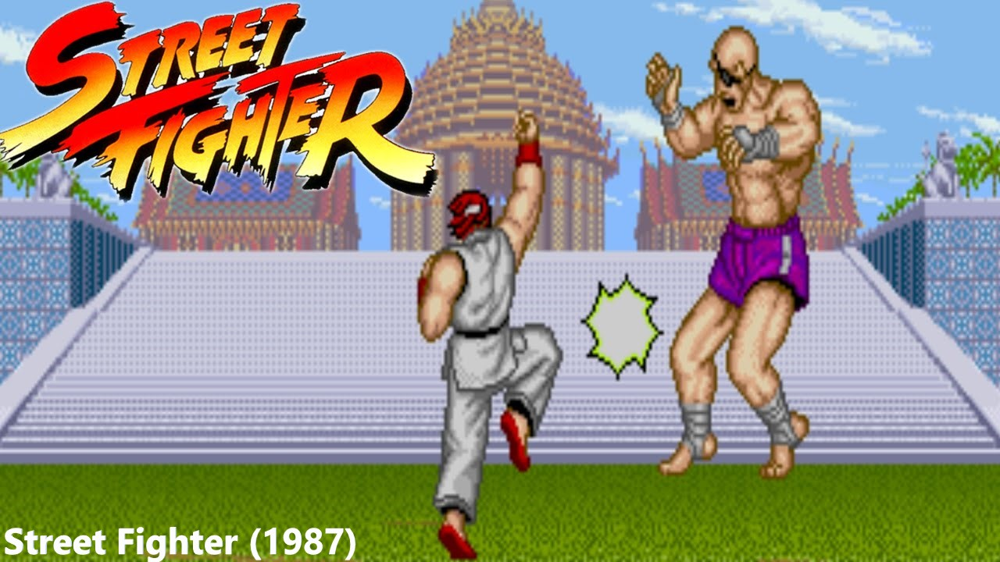

- Gênero: Luta
- Plataformas: Playstation / X-Box / Windows / Arcade(em breve)
- Jogadores: Singleplayer, Multiplayer(Local/Online)
- Lançamento: 02/06/23
- Desenvolvedora: Capcom
Street Fighter é uma franquia com mais de 35 anos, sendo um dos games mais influentes na história dos videogames. Seu primeiro game da série foi lançado em 1987 e não há um player dessa década que não conheça as palavras Hadouken e Shoryuken. Hoje a franquia evoluiu muito com seus belíssimos gráficos, novos personagens e novas mêcanicas, como o contra-ataque que elevou o nível de competitividade entre os players.
